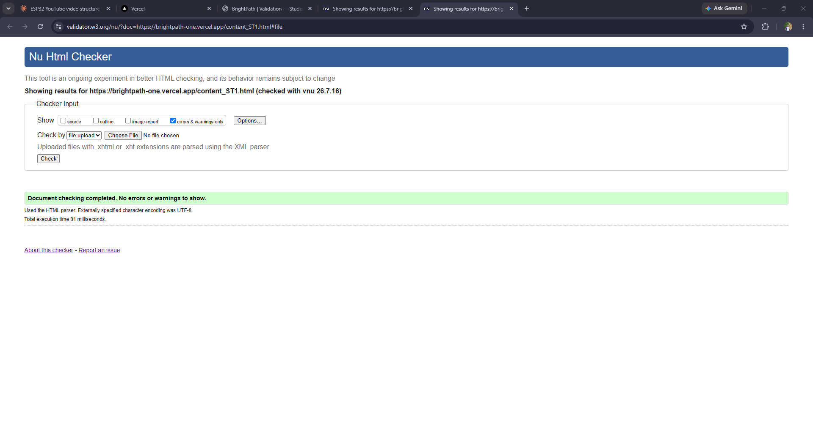
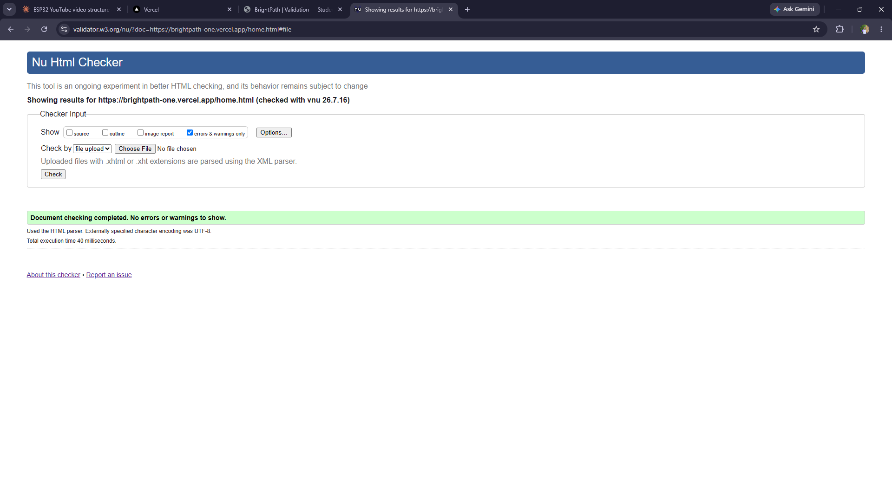
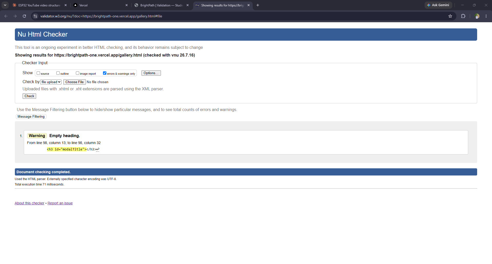

Content Page — content_ST1.html
| Page checked | brightpath-one.vercel.app/content_ST1.html |
|---|---|
| Tool | W3C Nu Html Checker (validator.w3.org/nu/) |
| Result | Pass — 0 errors, 0 warnings |

HTML validation evidence for Home Page, Gallery Page, and Content Page (content_ST1.html)
| Page checked | brightpath-one.vercel.app/home.html |
|---|---|
| Tool | W3C Nu Html Checker (validator.w3.org/nu/) |
| Result | Pass — 0 errors, 0 warnings |

| Page checked | brightpath-one.vercel.app/gallery.html |
|---|---|
| Tool | W3C Nu Html Checker (validator.w3.org/nu/) |
| Result | Pass — 0 errors, 1 warning |
Warning returned: Empty heading on <h3 id="modalTitle"></h3>
(line 98 in the current deployed version — see screenshot below). This is expected and
acceptable: this heading is the extended-view modal's title, which
starts empty in the HTML source and is filled in by JavaScript (modalTitle.textContent = ...)
only once a user clicks a thumbnail. The coursework spec explicitly allows warnings as long as
there are no errors.

| Page checked | brightpath-one.vercel.app/content_ST1.html |
|---|---|
| Tool | W3C Nu Html Checker (validator.w3.org/nu/) |
| Result | Pass — 0 errors, 0 warnings |

The first validator run on home.html returned a real error: the three mission-card
headings were marked up as <h3>, but appeared before any <h2>
on the page, so the outline jumped straight from <h1> to <h3>.
The fix was to add a proper <h2> ("Why we're doing this") introducing the cards
section, which resolved the error without changing how the page looks.
gallery.html initially failed for two reasons: the hidden modal's <img>
placeholder had src="", which HTML doesn't allow (an img must have a
non-empty src or none at all — and removing it entirely triggered a *different*
error, since img requires either src or srcset). The fix was
a tiny inline transparent placeholder image
(data:image/gif;base64,...) that satisfies the validator and is invisible until
JavaScript replaces it with the real photo on click. The same page also had the same heading-order
problem as the Home Page, fixed the same way by adding a heading before the thumbnail grid.
The lesson that carried across both fixes: the validator doesn't just check for typos, it checks that the heading structure actually forms a logical outline, and that "hidden until JavaScript fills it in" elements still have to be valid HTML in their empty state, not just their final state.